Decision Trees
The previous section predicted crashes from what owners wrote. This section asks a harder question: can the same crashes be predicted from the vehicle's own characteristics — its age, its rating, its equipment — without reading a single word of the narrative?
Overview
A decision tree is a sequence of yes-or-no questions arranged so that each answer narrows the possibilities. Prediction is the easy half: a new record enters at the top, each question sends it left or right, and when it reaches a leaf it receives whatever label dominates that leaf. The result is a model anyone can read, which is rare and genuinely valuable in a safety context, where "the model says so" is not an acceptable justification.
Training is where the real work happens, and it is greedy. The algorithm considers every feature and every threshold it could split on, measures how much each candidate split would improve the purity of the resulting groups, keeps the best one, and then repeats the entire procedure independently inside each branch. It never revisits an earlier decision. Growth stops when a limit is reached — maximum depth, a minimum number of samples in a leaf, or a group that is already pure.
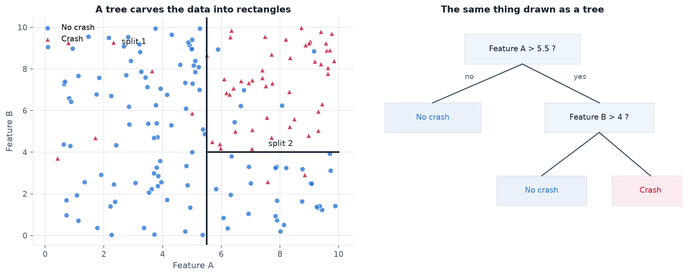
Gini, entropy and information gain
"Purity" needs a definition, and there are two standard ones. Both measure how mixed a group of records is, and both are zero when a group contains only one class.
- Gini impurity is the probability that two records drawn at random from the group have different labels. It peaks at 0.5 for a two-class problem split evenly.
- Entropy is the average number of bits needed to communicate the label of a record drawn from the group. It peaks at 1.0 for an even two-class split.
Information gain is the quantity actually being maximised: the impurity of the parent group minus the weighted average impurity of the two children the split would create. Weighting by group size matters, because a split that produces one immaculate branch of three records and one messy branch of thirty thousand has achieved almost nothing. A positive information gain means the split left the data more organised than it found it, and the tree simply keeps whichever candidate scores highest.
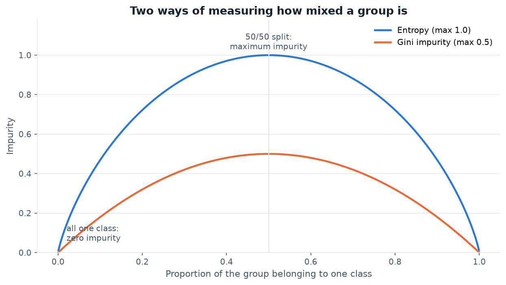
A worked example on this project's data
Taking the real training set of 60,461 complaints and testing the candidate rule vehicle age ≤ 2 years:
| Quantity | Value |
|---|---|
| Entropy of the parent group (all 60,461 rows) | 0.27440 |
| Left branch, rule matches | 23,729 rows |
| Right branch, rule does not match | 36,732 rows |
| Weighted average entropy of the two children | 0.26938 |
| Information gain | 0.27440 − 0.26938 = 0.00502 |
| The same split measured by Gini | 0.08995 − 0.08931 = 0.00064 |
Both measures agree that the split helps, and both agree it helps only slightly. Comparing it against three other candidate rules shows why the tree chose it anyway: it was simply the best of a weak field.
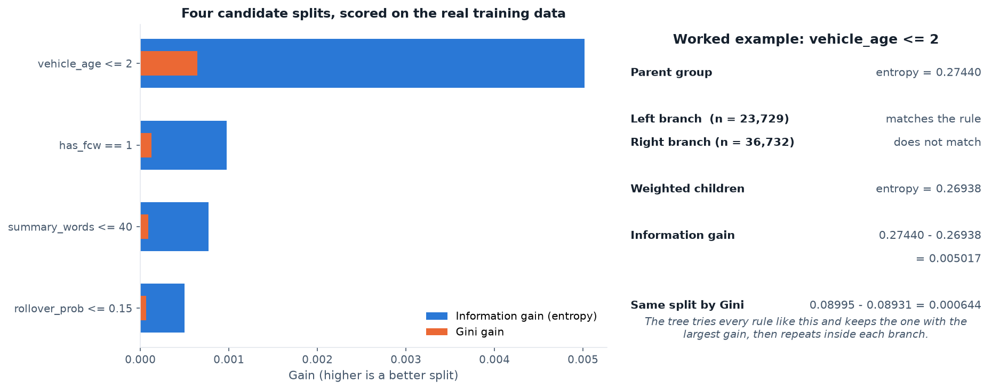
Why there are infinitely many possible trees
For any dataset with continuous features the number of possible trees is unbounded. A numeric feature offers a threshold between every pair of adjacent values, features can be reused at any depth with different thresholds, the same features can be arranged in any order, and nothing prevents a branch being extended until every leaf holds a single record. The space of trees grows faster than exponentially with depth, so finding the genuinely optimal tree is computationally intractable for any real dataset. This is the reason the training procedure is greedy: it takes the best split available right now and never reconsiders, which is fast and usually good but carries no guarantee of optimality. It is also the reason depth limits exist. Among that infinity of trees, the ones that fit the training data best are almost always the ones that have memorised it.
Data Prep
The same requirement applies as in the previous section: supervised learning needs labelled data, and the label here is identical — did this complaint involve a crash — so the two methods can be compared directly.
The features are entirely different, though. Instead of narrative text, each complaint is described by the vehicle and the report: vehicle age at the incident, days taken to report it, model year, the crash-test rating, rollover probability, whether collision and lane warning were fitted, the recall count, and how long the narrative was. Because scikit-learn's trees require numeric input, the two categorical fields — body segment and the component implicated — were one-hot encoded, with the long tail of rare components collapsed into a single "other" category to stop the encoding from exploding. Joining to the rated-vehicle table leaves 80,615 complaints described by 29 numeric features.
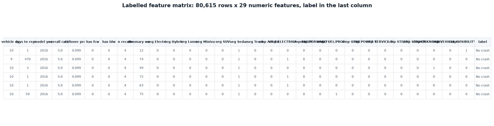
The train/test split follows the same discipline: 75/25, stratified on the label, fixed seed, and verified disjoint in code rather than assumed. That gives 60,461 training and 20,154 testing rows, both carrying the same 4.72% crash rate. The reason the sets must not overlap is especially visible with trees: an unconstrained tree can drive its training error to zero by growing a leaf for every record, so testing it on its own training data would report perfect accuracy for a model that has learned nothing transferable. The depth sweep below shows exactly that happening.
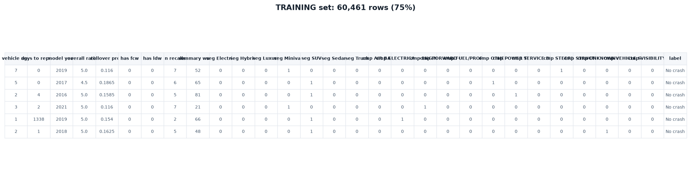
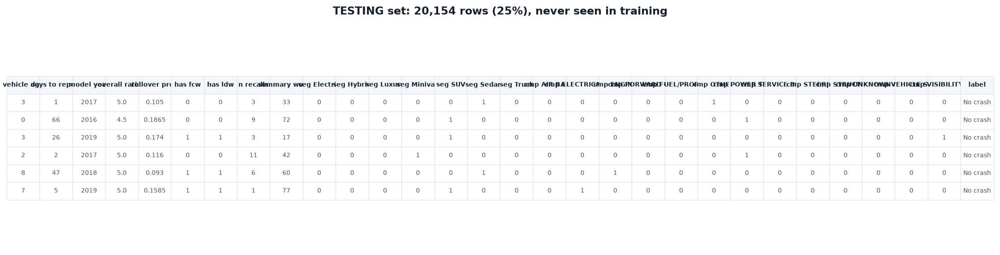
Data and code. Labelled matrix: dt_labeled_sample.csv · Training sample: dt_train_sample.csv · Testing sample: dt_test_sample.csv · Worked split example: dt_information_gain.csv · Metrics: dt_results.csv
Raw data: data/raw/ (all four sources, exactly as gathered) · cleaned source tables: complaints_clean.csv.gz, vehicle_model_year.csv
Code
The analysis is Python, in
decision_tree_analysis.py,
using DecisionTreeClassifier from scikit-learn. All three trees are
fitted with class_weight="balanced", which reweights the rare class
so the tree is not simply rewarded for predicting "no crash" everywhere. The
impurity functions used in the worked example above are implemented directly in
the script rather than taken from a library, so the arithmetic can be checked
line by line.
Results
Three trees
| Tree | Criterion | Depth | Leaves | Accuracy | Recall (Crash) | F1 (Crash) |
|---|---|---|---|---|---|---|
| Tree 1 | Gini | 3 | 8 | 88.22% | 0.495 | 0.284 |
| Tree 2 | Entropy | 5 | 32 | 87.21% | 0.536 | 0.284 |
| Tree 3 | Gini | 10 | 170 | 73.43% | 0.702 | 0.200 |
| Baseline | — | 0 | 1 | 95.28% | 0.000 | 0.000 |
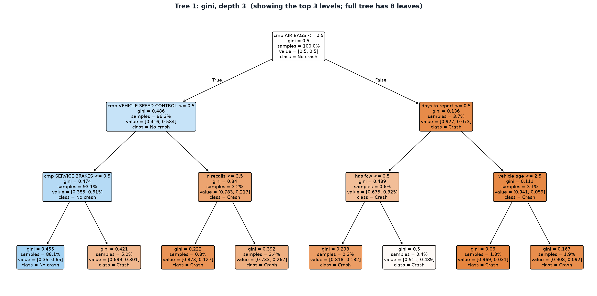
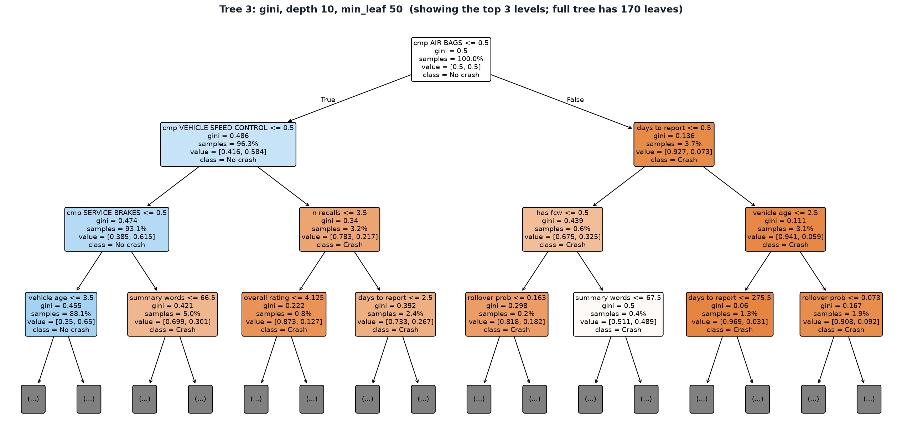
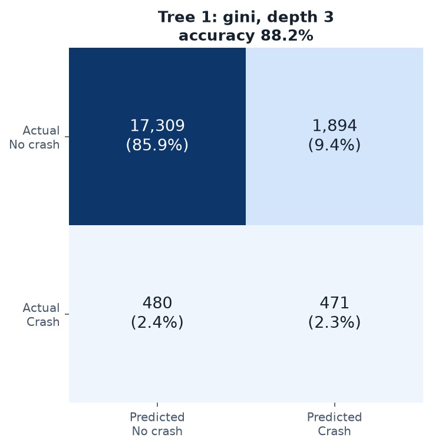
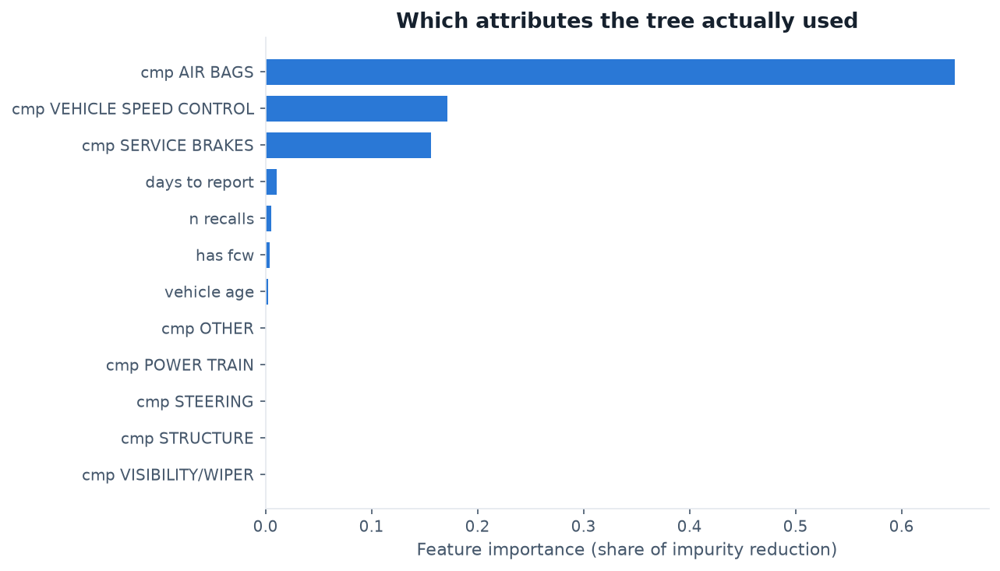
Why a bigger tree is a worse tree
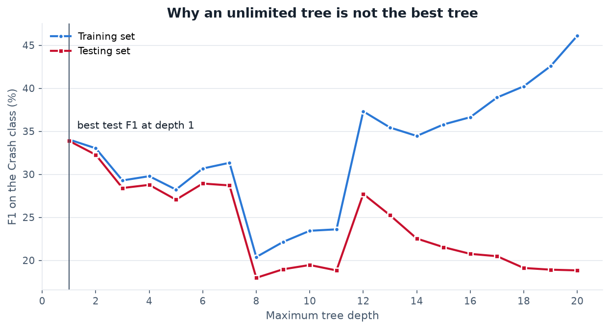
Conclusions
The headline result is a comparison rather than a number. Predicting a crash from what an owner wrote succeeds reasonably well; predicting the same crash from the vehicle's own characteristics barely works at all. The text-based model reached an F1 of 0.61 on the crash class, while the best tree built on vehicle age, rating, equipment and component reached 0.28. Both were given the same label, the same underlying complaints and the same split discipline. The difference is entirely in what they were allowed to look at.
That gap is the most topic-relevant thing this module produced. It says that whether a particular complaint involved a crash is mostly a property of what happened, not of what was driving. Knowing a vehicle's star rating, its rollover probability, whether it has automatic braking and how many recalls it has carries remarkably little information about whether any given incident ended in a collision. The feature-importance chart makes this concrete: the crash-test rating, the headline number a buyer is given, ranks near the bottom of what the tree found useful.
One attribute does carry real signal, and it is the one a buyer never sees in advance: which part of the car is being complained about. The tree's very first question is whether the complaint concerns airbags, and from there it asks about speed control and brakes. Component-level failures distinguish dangerous incidents far better than any vehicle-level specification does, which suggests that useful safety information lives at the level of parts rather than whole cars.
The deepest tree is also a caution worth keeping. It catches 70% of crashes, nearly as many as the text model, and by that one measure it looks the strongest of the three. It does so by flagging so many ordinary complaints that its overall accuracy falls to 73%, well below simply guessing. A model can be made to look good on whichever measure is quoted, which is precisely why the confusion matrix, the baseline and the held-back test set all had to be reported together rather than any one of them alone.